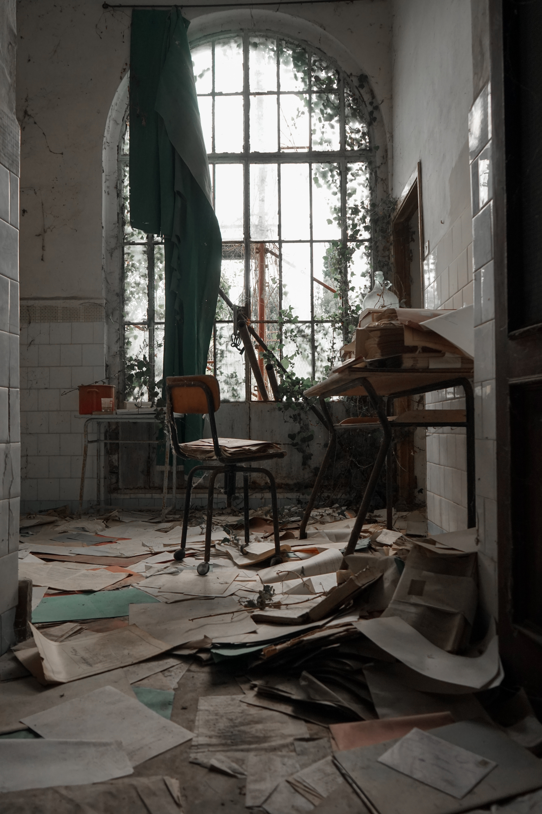

Suviliimatainen.com

Tervetuloa! Suviliimatainen.com tarjoaa apua liittyen suomen, englannin ja ranskan kieleen tarvittaessa nopeallakin aikataululla. Tuotteitamme ovat niin ammattitaitoisesti tehdyt käännökset, kielten oppitunnit kuin tulkkauksetkin. Myös oikoluku onnistuu sovittaessa. Opit tuotteistamme ja Suvista lisää näiltä sivuilta.

Lisää Suvista: Suvi on 28-vuotias ranskan kääntämisen ja tulkkauksen maisteri, joka on työskennellyt uransa aikana käännösprojektipäällikkönä, tulkkina, kääntäjänä sekä Supply Chain Specialistina kansainvälisessä yrityksessä pääasiassa ranskan kielellä.. Työharjoittelun hän teki rekrytointiassistenttina Pariisissa ja vietti lukioaikana vuoden Ranskan maaseudulla. Hänellä on runsaasti kokemusta erilaisista teksityypeistä, sekä puhelin- ja läsnäolotulkkauksesta. Hän osallistui myös Madame de Sévignén 1800 -luvulla kirjoittamien kirjeiden käännösprojektiin.
Käännökset

Käännökset
Käännökset monenlaisiin tarpeisiin. Pyydä tarjouspyyntö, ja palaan siihen mahdollisimman pian!
Tulkkauspalvelut

Tulkkauspalvelut
Tulkkausta monenlaisiin tarpeisiin. Pyydä tarjouspyyntö, ja palaan siihen mahdollisimman pian!
Kielten opetus

Kielten opetus
Oppitunnit monenlaisiin tarpeisiin. Suunnittelen Sinulle yksilölliset tunnit tarpeidesi mukaisesti!